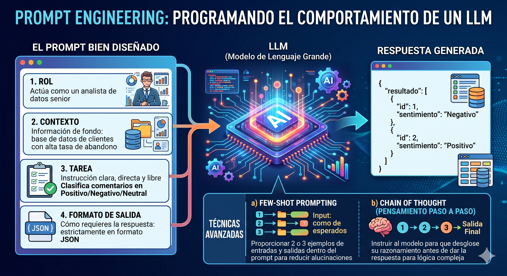
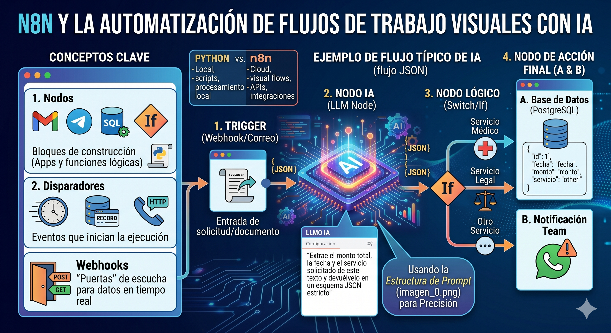

Unidad 4: Automatización#
En esta última unidad, integraremos las herramientas de inteligencia artificial y la orquestación de servicios web para crear sistemas que funcionen de manera autónoma. Nos centraremos en dos pilares fundamentales: la comunicación efectiva con modelos de lenguaje (Prompting) y la creación de flujos de trabajo visuales (n8n).
4.1 Ingeniería de Instrucciones (Prompting)#
El «Prompt Engineering» no es solo escribir preguntas; es la disciplina de estructurar el texto de entrada para programar el comportamiento de un Modelo de Lenguaje Grande (LLM). Una instrucción bien diseñada determina la precisión, el formato y la utilidad de la respuesta generada por la IA.
A. Estructura de un Prompt Efectivo#
Para obtener resultados consistentes, especialmente en tareas de extracción o análisis de datos, un prompt debe contener los siguientes elementos estructurales:
Rol: Define quién es la IA y bajo qué marco de conocimiento debe operar (ej. «Actúa como un analista de datos senior…»).
Contexto: Entrega la información de fondo («Tenemos una base de datos de clientes con alta tasa de abandono…»).
Tarea: La instrucción clara, directa y libre de ambigüedades («Clasifica los siguientes comentarios de clientes en: Positivo, Negativo o Neutral»).
Formato de Salida: Cómo requieres la respuesta («Devuelve el resultado estrictamente en formato JSON, sin texto adicional»).
B. Técnicas Avanzadas de Prompting#
Few-Shot Prompting: En lugar de pedirle a la IA que ejecute una tarea sin contexto previo (Zero-Shot), le proporcionamos 2 o 3 ejemplos de entradas y sus respectivas salidas esperadas dentro del mismo prompt. Esto reduce drásticamente las alucinaciones del modelo.
Chain of Thought (Cadena de Pensamiento): Consiste en instruir al modelo para que «piense paso a paso» o desglose su razonamiento antes de dar la respuesta final. Es crucial cuando se le pide a la IA que realice deducciones lógicas complejas.

4.2 Orquestación y Automatización con n8n#
Mientras que los scripts en Python son excelentes para el procesamiento local de datos, n8n es la herramienta ideal para conectar diferentes aplicaciones, bases de datos y APIs en la nube. Es una plataforma de automatización basada en nodos y de código justo (fair-code) que permite construir flujos de trabajo visuales.
A. Conceptos Clave en n8n#
Nodos (Nodes): Son los bloques de construcción de la plataforma. Cada nodo representa la integración con una aplicación (ej. Gmail, Telegram, PostgreSQL) o una función lógica (ej. un condicional
ifo una transformación de código).Disparadores (Triggers): Son los eventos que inician la ejecución de la automatización. Puede ser una programación temporal (ej. «Ejecutar todos los viernes a las 5 PM»), un evento en una app (ej. «Nuevo registro en una base de datos») o una petición HTTP externa.
Webhooks: Son «puertas» de escucha que habilitamos en n8n para que otros sistemas le envíen datos en tiempo real mediante solicitudes POST o GET.
B. Creación de un Flujo de Trabajo (Workflow) con IA#
En n8n, los datos fluyen de nodo en nodo en formato JSON. El verdadero poder de esta herramienta se despliega cuando la combinamos con las técnicas de Prompting vistas anteriormente.
Un flujo típico de automatización avanzada podría ser:
Trigger (Webhook/Correo): Entra una solicitud de un cliente o un documento no estructurado.
Nodo de IA (LLM Node): Se envía el contenido a un modelo de lenguaje con un prompt estructurado: «Extrae el monto total, la fecha y el servicio solicitado de este texto y devuélvelo en un esquema JSON estricto».
Nodo Lógico (Switch/If): Dependiendo del servicio extraído por la IA, n8n enruta los datos por diferentes caminos.
Nodo de Acción (Base de Datos/Notificación): El JSON resultante se inserta automáticamente como un nuevo registro en una base de datos o dispara una alerta en el canal de comunicación del equipo.
